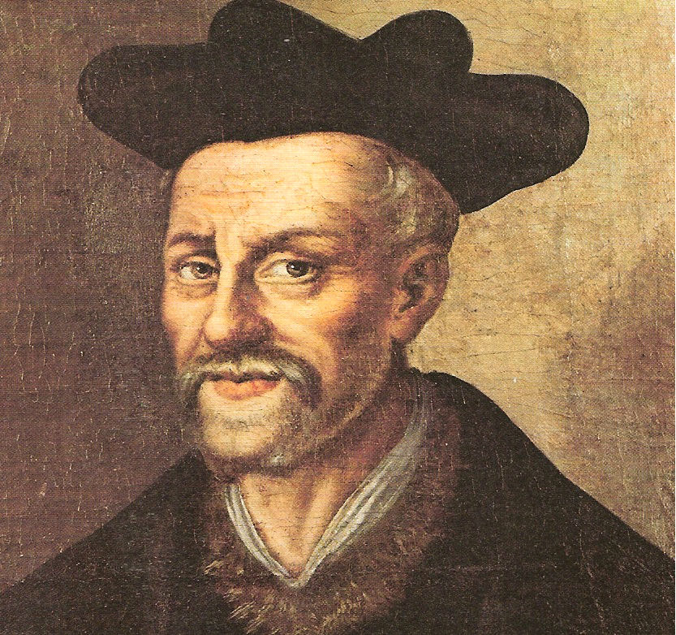

Quá trình hội nhập văn học của văn học Việt Nam với văn học thế giới từ giữa thập kỷ tám mươi thế kỷ XX đến nay thường được nhìn nhận theo những cách thức khác nhau.
Với những người đã chứng kiến sự bùng nổ thông tin ghê gớm đang diễn ra ở nhiều nước trên thế giới thì những hoạt động đó còn có vẻ dè dặt, do đó bé nhỏ đơn sơ và không có gì đáng kể.
Song chỉ cần trở lại với thực tế Việt Nam, nhớ lại sự xơ cứng trong hoạt động này trong khoảng mười năm ngay sau chiến tranh, thì người ta đã có thể nói rằng ở đây đã diễn ra một bước chuyển căn bản.
Chúng ta không chỉ cho dịch những cuốn sách bán chạy, không chỉ giới thiệu mọi mặt hoạt động sách vở ở nước nọ nước kia, mà còn chia sẻ với họ cách nhìn nhận cũng như cách hiểu về văn học nói chung. Ngay cách đưa tin cũng bao nhiêu đổi khác. Những tác phẩm tưởng như xa lạ trở nên gần gũi bởi chủ đề nhân bản sâu sắc và cách diễn tả độc đáo. Và những nhà văn hàng đầu của thế giới cũng hiện ra với bao nhiêu chuyện thân tình tuy vẫn không vì thế mà mất đi tầm vóc lớn lao. Cả cái vẻ rất hiện đại, những tìm tòi tưởng là kỳ cục quái gở mà chỉ văn chương cuối thế kỷ XX này mới có, khi vào với đời sống văn học còn tĩnh lặng ở ta, cũng vẫn giữ được cái sự cận nhân tình cần thiết. Còn những giá trị cổ điển thì lại luôn được làm mới.
Sở dĩ được như thế một phần là vì những người đảm nhận vai trò thông tin ở ta, khi dựa vào báo chí nước người để nhờ họ làm trung gian cho sự giao lưu vừa mới bắt đầu, đã có một cách xử lý khôn ngoan và hợp lý.
Chẳng hạn như trường hợp Hà Vinh. Không chỉ có một căn bản tiếng Anh và Pháp, mà quan trọng hơn ở người môi giới văn học này còn có một khẩu vị tinh tế và nhất là một tư duy văn học mềm mại theo kịp với những đổi mới hiện đại của văn học phương Tây. Thêm vào đấy nữa việc vận dụng tiếng Việt khá tự do đã khiến cho ông trong phần lớn trường hợp, nói lại chuyện người một cách tự nhiên và chủ động diễn tả những điều mới mẻ theo những cách thức phải nói là nhiều chiều cạnh, nhiều tầng nghĩa, người chưa quen dễ chấp nhận, mà người biết nhiều vẫn cảm thấy có cái mới.
Theo sự quan sát của tôi thì trong khoảng thời gian hai chục năm qua, những bài viết mang tính cách biên soạn của Hà Vinh và các cộng tác viên của ông, thoạt đầu được in trên tờ Thể thao và văn hóa, thực sự đã trở thành một món ăn tinh thần thường xuyên do đó thành người bạn tin cậy của nhiều bạn đọc thanh niên ở ta, trong đó có cả nhiều người viết văn không có may mắn là biết được một ngoại ngữ để tự do hội nhập với thế giới.
Đó cũng là lý do khiến tập sách này được biên soạn. Chúng ta chỉ làm công việc đơn giản là chỉnh sửa một số câu chữ sắp xếp lại các bài theo diễn biến của văn học và tước đi những sự lặp lại không cần thiết. Hy vọng Có những nhà văn như thế sẽ đồng hành cùng các bạn trên đường học tập và nghiên cứu, nói nôm na là để các bạn đọc lại trong những dịp cần thiết.
Trình độ người viết và người biên soạn có hạn, tập sách chắc không tránh khỏi thiếu sót, rất mong bạn đọc lượng thứ.
VƯƠNG TRÍ NHÀN

.François Rabelais (1494-1553)
Vào thời trẻ Rabelais (1494-1553) đã là tu sĩ tại tu viện Puy-Saint-Martin ở Fontenay-le-Comte, vùng Vendée nước Pháp và những kỷ niệm về ông đã và đang còn hết sức hiện diện tại cái thành phố nhỏ bé này. Tên của ông khắc với những chữ cái to đùng trên bể nước phun tại quảng trường Viète nơi mà vào ngày lễ, chủ nhật dàn nhạc thường hay trình diễn. Ngay gần phố Orfèvres, một vòi nước khác có từ thời Francois Đệ nhất, được trang trí bằng một bi ký theo bút tích của người tu sĩ thông thái này. Trên phố Orfèvres, người ta còn thấy những thầy tu dòng Franciscain đi lại, mặc áo choàng nâu bằng len thô, đi chân đất, khiến người ta tưởng tượng là có thể trong số họ có một thầy tu trẻ tóc hung đang nhăn mặt làm hề với một chú bé nào đó theo cái cách mà các thầy giáo đôi khi gợi lên khi giảng dạy về Rabelais. Và rồi không xa Fontenay là tu viện Maillezais hoang phế, nơi mà Rebelais đã sống những ngày hạnh phúc, nơi của những tu sĩ Bénédictin có học và hiền hòa.
Chính trong môi trường này đã ra đời tuyệt tác Pantagruel và Gargantua như thể là một sưu tập những truyện kể địa phương. Cũng vẫn là những cuộc chè chén lu bù, những con người to bự ấy, những kẻ phóng đãng ấy, những tật phàm ăn ấy.
Trong cuộc sống lang bạt và ly hương kéo dài của mình – ở Montpellier, Lyon, Roma, Piémont, Metz–Rabelais bao giờ cũng nhớ lại quê hương Touraine của mình, coi đó là trung tâm thế giới đối với ông, nơi diễn ra tất cả những chương hồi của các tiểu thuyết của ông, nhưng cũng không quên đi xứ Vendée.
Đã bao lâu người ta khinh thường Rabelais. Người ta ít đọc hay không hề đọc sách ông. Ông hiện ra một cách tối tăm mờ nhạt, bị che phủ trong một kho từ vựng cổ xưa. Những thứ tục tĩu của ông viết ra còn làm cho cả Voltaire cũng bị sốc. Từ cái chết của vua Francois Đệ Nhất, kẻ vốn yêu ông, thì Rabelais bị xếp vào ngăn kéo của những cuốn sách cũ vì bị coi là khiếm nhã. Văn học Pháp ư? Không phải là thứ rối rắm tối nghĩa ấy mà là sự trong sáng của Ronsard, Ronsard thù ghét Rabelais và ngôn ngữ dung tục của ông. Hoàn toàn giống Rebalais, Ronsard đảm nhận việc tạo ra ngôn ngữ Pháp – cái thay thế cho tiếng La Tinh, ngôn ngữ chính thức, thứ ngôn ngữ của tương lai. Nhưng Ronsard muốn dẫn dắt văn học Pháp qua cánh cửa của ngôn ngữ cung đình. Ngược lại Rabelais thì giương cao thứ ngôn từ rộng lớn của những thổ ngữ, những tiếng lóng, những thành ngữ dân gian như một dòng thác từ ngữ mà ông bày ra dưới chân Đại học đường Sorbonne.
Louis-Ferdinand Céline có lần nói: “Rabelais, ông đã thất bại”. Ông thất bại bởi vì Ronsard đã thắng, và sau đó là Malherbe và Boileau. Ngôn ngữ cung đình đã và luôn luôn là tiếng nói của văn học Pháp, mặc dầu vào thế kỷ XIX, Hugo, Gautier, Flaubert mưu toan khôi phục Rabelais và mặc dầu văn học thế kỷ XX lấy động lực từ Ulysse của James Joyce và Mort à Crédit (Chết nợ – tạm dịch) của Céline trong mạch văn Rabelais.
Việc xuất bản hàng loạt những tác phẩm của Rabelais vào dịp kỷ niệm “giả” 500 ngày sinh của ông (nói là “giả” vì đã gần 10 năm người ta bỏ lơ đi ngày sinh của ông) không phải là chuyện tình cờ. Nó đánh dấu sự phục hồi của Ralebais, con người cùng thời với chúng ta, và nếu như ông ta đã thua keo đầu thì lại thắng keo sau.
Bởi lẽ điều hết sức rõ ràng là Rabelais đồng thời với chúng ta hơn là Ronsard. Đồng thời với ngôn từ lẫn đầu óc, cả tài năng sáng tạo lẫn cái “gu” thông thái và còn cả cái nghệ thuật lãng mạn của ông nữa.
Pantagruel và Gargantua trong thực tế không chỉ là một cuốn, mà là tập đại thành, có 5 lớp, của những tác phẩm bao trùm suốt cuộc đời tác giả. Nó là tiểu thuyết Pháp đầu tiên, viết bằng tiếng Pháp, bằng thứ ngôn ngữ bình dân. Và bây giờ chúng ta còn thấy ra rằng nó là cuốn tiểu thuyết “hiện đại” đầu tiên.
Thứ tiểu thuyết phúng dụ như Don Quichotte xuất hiện ở Tây Ban Nha sau đó một thế kỷ và xem ra lấy cảm hứng từ những truyện kể hiệp sĩ dân gian. Về phần Rabelais, đôi chân của ông cắm sâu vào thời Trung cổ, còn cái đầu ngẩng cao hướng về tương lai. Lối viết của ông không quen thuộc với chúng ta vì đấy là một sự hòa trộn giữa những cái thô lậu, những chuyện đầu Ngô mình Sở, những câu đùa cợt bẩn thỉu và cả cái chất thông thái uyên bác, một thứ văn hóa bách khoa của một thầy thuốc - tu sĩ (người ta biết ông là một trong những nhà y học tiếng tăm nhất thời đại mình). Pantagruel và Gargantua viết ra như là những cuốn sách phổ thông nhưng thực sự là những tác phẩm cực kỳ thông thái về chủ đề, mã hóa và hàng đống biểu tượng. Cũng không nên quên rằng đấy là thời của Tòa Án Dị Giáo đầy khủng bố, rằng người bạn ông là Etienne Dolet bị thiêu sống vì coi là tà giáo. Rabelais, suốt đời vẫn là tu sĩ, và rất quan tâm đến thần học cũng như chủ nghĩa nhân đạo. Cái khung vũ hội hóa trang của truyện ông là nhằm ngụy trang cho những quan điểm chính trị và tôn giáo. Bởi vì con người này sống vào một thời đại mà sự bất khoan dung và thuyết toàn vẹn là những thứ đã tạo ra những nỗi khủng khiếp của cuộc chiến tranh tôn giáo giữa Công giáo La Mã và Tin lành. Ông đã hướng mọi tác phẩm của mình về sự khoan dung, tự do tư tưởng, quyền tự do được sống theo cách của mình. Và ông đã bị nhà thờ cấm tác phẩm Gargantua, và sở dĩ đời ông lang bạt chui nhủi là vì sau bước chân mình là giàn thiêu của Tòa Án Dị Giáo săn đuổi.
Pantagruel xuất bản năm 1532 ở Lyon, khiến độc giả nhao nhao tìm đọc nhưng lại không được giới tinh hoa đón nhận và chính do điều này nữa, Rabelais là người đương thời với chúng ta. Như người ta biết, thành công của ông làm học đường Sorbonne bối rối, và tác giả trở thành một phần tử bị tình nghi. Hơn nữa việc ông tưởng tượng ra những nhân vật có một sức sống lớn lao đến mức có thể kéo dài đến tận bây giờ đã không hề góp phần làm cho ông đáng được sự bảo chứng của cái Đại học đường đó. Tiểu thuyết hành động, với những pha hồi hộp, những tình tiết lắt léo, những tình huống say sưa và gồm đủ các loại người. Chẳng hạn Panurge, giảo hoạt như Ulysse, là người biết nhiều ngôn ngữ. Nếu Ulysse của Joyce không giống với tác phẩm Quart Livre của Rabelais với một cuộc phiêu lưu lớn trên biển trong đó có cái giai thoại về những con cừu của Panurge, thì cuốn sau lại không phải không có gì giống với Odyssée của Homère (nên nhớ là Rabelais rất thông thạo tiếng Hy Lạp).
Pantagruel và Gargantua đã không ngừng trở lại với thế giới sử thi của Hy Lạp, và tìm cách đánh lạc hướng, từ trò bắt chước đến những truyện ngụ ngôn. Rabelais đã tham bác và biên soạn nhiều về những tác phẩm hài hước la tinh, hứng thú với ngày hội “thằng ngu” và “lễ lừa”. Vào cuối thời trung cổ, trật tự giáo hội và hiệp sĩ bị nổ tung. Và thế kỷ XV chứng kiến sự ra đời của Rabelais, nổ bùng ra như một chiếc bụng quá căng phồng. Trước khi biến mất đi một thế giới bần cùng, đầy thiên kiến, cuồng tín, khủng bố, nó khiến ông có một sự ham muốn cháy bỏng, một tham vọng điên cuồng, để khôi phục lại cái ký ức đó bằng vô vàn truyện tiếu lâm. Huyền thoại hóa thứ ngôn ngữ của chợ búa, của đường phố, của hàng quán, nông nô và đồng thời dân chủ hóa ngôn ngữ, ông viết bằng thứ ngôn ngữ đời thường trong tinh thần bình đẳng giữa những con người. Gargantua, một nông dân, sản phẩm của truyện thần thoại xen-tích vốn đã được truyền miệng trước đó, được sử dụng làm công cụ đánh đổ chủ nghĩa giáo điều trung cổ. Gargantua và Pantagruel nhìn thế giới từ những mặt trái của nó. Nhưng mặt trái chính là mặt phải. Thế kỷ của Rabelais bắt đầu với một khao khát thế tục, một niềm vui được hiểu biết, từ các nhà hiền triết cổ đại đến những phát hiện địa lý (châu Mỹ) và kỹ thuật (máy in) và kết liễu trong nỗi khủng khiếp của các cuộc chiến tranh tôn giáo. Trong khi đó, tiếng kêu của một số người tự do đã làm thế giới chao đảo. Và đấy là ba tu sĩ cổ: Erasme, Luther và Rabelais. Cả ba đều muốn mang trở lại cho Thiên Chúa giáo cái thông điệp về tự do và bình đẳng mà các Giáo hoàng đã quên đi.
Gargantua và Pantagruel phá vỡ những xích xiềng của thần học trung cổ, của tinh thần hiệp sĩ, của nền chính trị bất khoan dung. Tinh thần tự do và bình đẳng, cái thông điệp của nó hiện đại đến sững sờ. Trong tu viện Thélème, không có tường bao, không có kỷ luật. Đấy là sự biện giải của Diogène.
Đấy là việc tại sao, trong cái thời đại của bất khoan dung, của cuồng tin, của chủ nghĩa toàn vẹn hiện nay của chúng ta, tác phẩm của Rabelais một lần nữa lại trở nên hấp dẫn. Đấy là việc tại sao nó vẫn bổ ích đối với chúng ta. Đấy là việc tại sao chúng ta cảm thấy mình gắn bó anh em với nó.